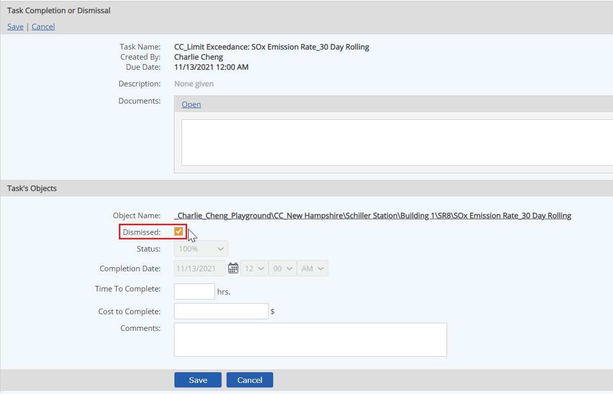
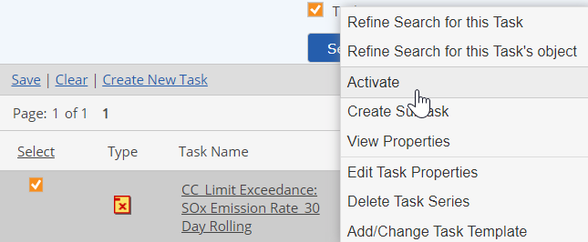

Tasks that cannot be completed can be dismissed. For example, a task that requires collection of a storm water sample may be dismissed during a period when no precipitation has occurred. Or an equipment inspection task may be unnecessary when the equipment is not in use.
When a task applies to more than one object, you may dismiss the task for one object while completing it for others. Dismissed tasks are not counted in reporting task status for multiple-object tasks.
To dismiss a task:
Open the task completion page by one of the following methods:
Select Save.

To reactivate a dismissed task, right click the task and select Activate.
